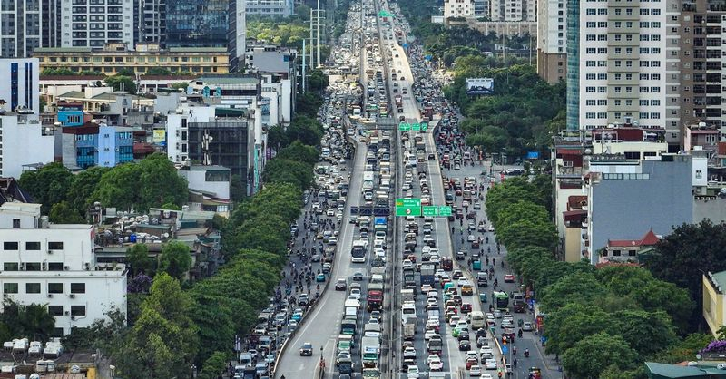
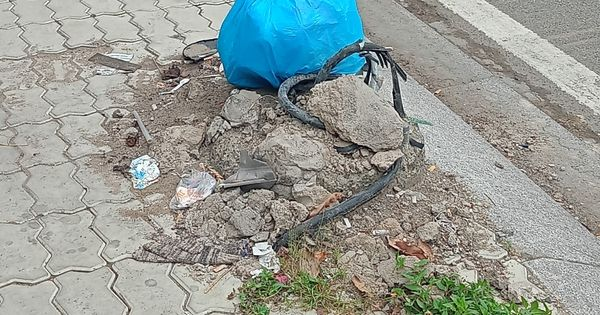
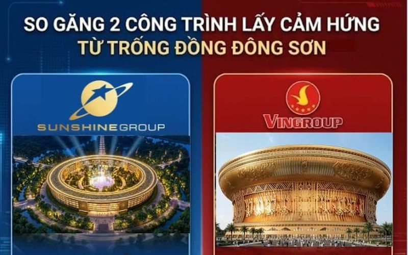
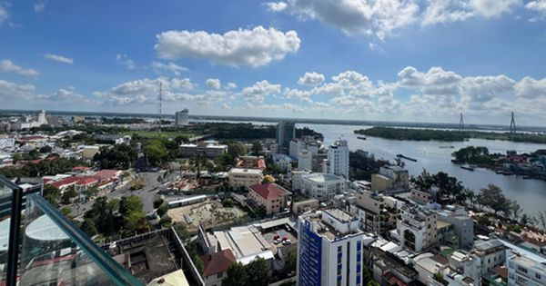
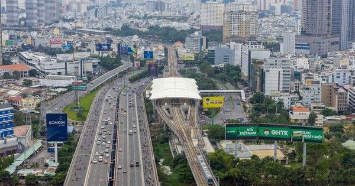
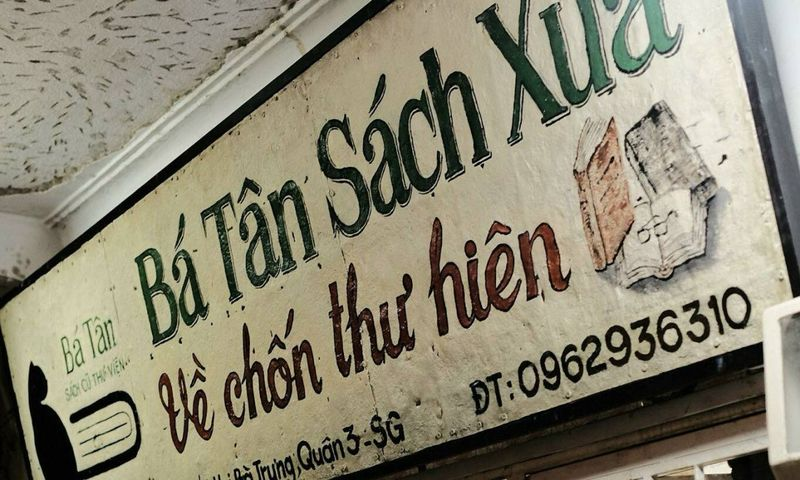
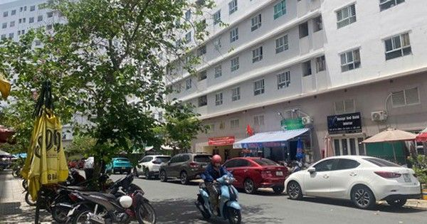

TongHopTin
Tong hop tin tuc - 2026-05-25
Chuyên gia dự báo một “siêu sóng” 50 tỷ USD có thể đổ bộ chứng khoán Việt Nam 🔗 MOI
TIN MỚI Trong nhận định mới đây, ông Nguyễn Thế Minh - Giám đốc Ngân hàng đầu tư Chứng khoán An Bình (ABS) cho biết mức tăng trưởng của thị trường chứng khoán Việt Nam đã bị hạ từ “tích cực” xuống “tr
Phát huy vai trò chủ đạo của kinh tế nhà nước trong kỷ nguyên mới 🔗 MOI
Kinh tế Thay vì dựa trên quy mô sở hữu, bài viết phân tích vai trò của kinh tế nhà nước trong nền kinh tế Việt Nam theo cách tiếp cận chức năng: ổn định kinh tế vĩ mô, định hướng phát triển và thiết l
Ông Trump bất ngờ bảo không vội vàng ký thỏa thuận với Iran 🔗 MOI
Tổng thống Mỹ Donald Trump trước khi lên chuyên cơ ngày 23-5 - Ảnh: AFP Theo Hãng tin Reuters, ngày 24-5, Tổng thống Mỹ Donald Trump bất ngờ tuyên bố đã chỉ đạo các đại diện đàm phán không vội vàng đạ
Bộ Tài chính bỏ đề xuất ngân hàng phải cung cấp thông tin tài khoản người nộp thuế 🔗 MOI
Bộ Tài chính đang xây dựng dự thảo Nghị định hướng dẫn Luật Quản lý thuế, dự kiến có hiệu lực từ 1/7 năm nay. Trong dự thảo Nghị định trước đó, cơ quan soạn thảo từng yêu cầu ngân hàng, ví điện tử, tổ
Đại gia bán iPhone chơi chứng khoán: “Yêu” họ VIX, GEX, EIB và lỗ 25% - 33% 🔗 MOI
PET: Giá hiện tại Thay đổi Xem hồ sơ doanh nghiệp TIN MỚI Petrosetco hiện là nhà phân phối thiết bị công nghệ lớn, đóng vai trò đối tác của Apple từ năm 2020 và Samsung từ năm 2025. Trong năm 2025, mả
Dự thảo văn kiện Đại hội XIV của Đảng: Nhìn từ lăng kính kinh tế - tài chính 🔗 MOI
Thời sự Dự thảo Báo cáo chính trị trình Đại hội XIV của Đảng đặt mục tiêu tăng trưởng GDP giai đoạn 2026–2030 đạt từ 10%/năm trở lên với định hướng rõ ràng chuyển đổi mô hình tăng trưởng dựa vào khoa
Ông Trump chuẩn bị khám sức khỏe khi sắp bước qua tuổi 80 🔗 MOI
Tổng thống Mỹ Donald Trump phát biểu tại bang New York ngày 22-5. Ông Trump đang đối mặt nhiều chú ý về tình trạng sức khỏe và tuổi tác khi sẽ bước sang tuổi 80 vào tháng tới - Ảnh: AFP Tạp chí The Ec
Đổi mới mô hình tăng trưởng gắn với tái cơ cấu nền kinh tế trong giai đoạn mới 🔗 MOI
Pháp luật Triển khai Nghị quyết số 07-NQ/TW ngày 18/11/2016 của Bộ Chính trị về chủ trương, giải pháp cơ cấu lại ngân sách nhà nước, quản lý nợ công, việc cơ cấu lại ngân sách nhà nước, quản lý nợ côn

Tiếp nhận phản ánh kiến nghị của doanh nghiệp 🔗 MOI
HỌ VÀ TÊN * EMAIL * SỐ ĐIỆN THOẠI * ĐỊA CHỈ * TIÊU ĐỀ * FILES ĐÍNH KÈM NỘI DUNG * RadEditor - HTML WYSIWYG Editor. MS Word-like content editing experience thanks to a rich set of formatting tools, dro

Khu Công nghiệp, Khu Kinh tế 🔗 MOI
Phát triển khoa học công nghệ, đổi mới sáng tạo và chuyển đổi số đóng vai trò quan trọng để nước ta chuyển đổi mô hình tăng trưởng và đạt mục tiêu tăng trưởng 2 con số. Chính vì vậy, việc phát huy ngu

Lãi suất cho vay đã nhích lên tại nhiều ngân hàng 🔗 MOI
15 ngân hàng tăng lãi suất cho vay trong tháng 4 25 ngân hàng thương mại trong nước đã công bố lãi suất cho vay bình quân, mức chênh lệch lãi suất giữa cho vay bình quân và huy động bình quân của thán
Khơi thông các động lực tăng trưởng kinh tế Việt Nam 🔗 MOI
Pháp luật Nhờ sự phối hợp đồng bộ của chính sách tài khóa và tiền tệ trong việc thúc đẩy cầu trong nước, kinh tế Việt Nam năm 2025 phục hồi mạnh, với tăng trưởng vượt mục tiêu đề ra. Về ổn định kinh t
Năng lượng & Khoáng sản 🔗 MOI
Ngày 9/4, Ủy ban Thường vụ Quốc hội đã cho ý kiến về dự thảo Nghị quyết của Quốc hội về việc ban hành một số quy định về thuế bảo vệ môi trường, thuế giá trị gia tăng, thuế tiêu thụ đặc biệt đối v
Kiến tạo không gian phát triển mới cho kinh tế tập thể 🔗 MOI
Pháp luật Trong giai đoạn 2021-2025, dựa vào mục tiêu phát triển, điều kiện ngân sách và nhu cầu hỗ trợ, năng lực của các hợp tác xã, Thủ tướng Chính phủ đã ban hành Chương trình hỗ trợ phát triển kin
Sắt thép là hàng xuất khẩu chủ lực sang Indonesia 4 tháng đầu năm 🔗 MOI
Lực kéo từ nhóm hàng sắt thép và nguyên liệu công nghiệp đã giúp tổng kim ngạch xuất nhập khẩu Việt Nam - Indonesia đạt hơn 6,07 tỷ USD trong 4 tháng đầu năm 2026, tăng gần 7% so với cùng kỳ năm 2025.
Nhìn lại 1 năm thực thi Nghị quyết 68-NQ/TW 🔗 MOI
Doanh nghiệp Sau 1 năm triển khai Nghị quyết số 68-NQ/TW, nhiều doanh nghiệp công nghệ Việt ghi nhận những chuyển biến tích cực từ môi trường kinh doanh, cơ chế hỗ trợ và tư duy điều hành theo hướng k
Tạp chí Kinh tế Sài Gòn 🔗 MOI
Kinh tế Sài Gòn giữ bản quyền nội dung của trang web thesaigontimes.vn. Không sử dụng lại nội dung trên trang này dưới mọi hình thức, trừ khi được Kinh tế Sài Gòn đồng ý bằng văn bản. Trang ngoài sẽ đ
Tạp chí Kinh tế Sài Gòn 🔗 MOI
Kinh tế Sài Gòn giữ bản quyền nội dung của trang web thesaigontimes.vn. Không sử dụng lại nội dung trên trang này dưới mọi hình thức, trừ khi được Kinh tế Sài Gòn đồng ý bằng văn bản. Trang ngoài sẽ đ
Tạp chí Kinh tế Sài Gòn 🔗 MOI
Kinh tế Sài Gòn giữ bản quyền nội dung của trang web thesaigontimes.vn. Không sử dụng lại nội dung trên trang này dưới mọi hình thức, trừ khi được Kinh tế Sài Gòn đồng ý bằng văn bản. Trang ngoài sẽ đ
Tạp chí Kinh tế Sài Gòn 🔗 MOI
Kinh tế Sài Gòn giữ bản quyền nội dung của trang web thesaigontimes.vn. Không sử dụng lại nội dung trên trang này dưới mọi hình thức, trừ khi được Kinh tế Sài Gòn đồng ý bằng văn bản. Trang ngoài sẽ đ

Làm dự án nhà cho thuê trăm thứ khó: Nhà đầu tư hiến kế 'thóc ở đâu bồ câu ở đấy' 🔗 MOI
Bài 1: Nhà ở không được bán trong 3 năm đầu: Hà Nội làm đô thị đa mục tiêu, lợi cho ai? Nhà cho thuê thành “bài toán buôn ngược” Chia sẻ với PV VietNamNet, ông Phạm Đức Toản, Chủ tịch HĐQT kiêm Tổng g
Hôm nay 25.5 ngày về trẻ em ở Mỹ, tại Việt Nam là ngày gì? 🔗 MOI
Dương lịch hôm nay là thứ hai, đánh dấu năm 2026 trải qua ngày thứ 144. Theo lịch âm hôm nay 25.5 là ngày 9 tháng 4, theo cách gọi can chi là ngày Kỷ Hợi, tháng Quý Tỵ, năm Bính Ngọ. Ngày 25.5 theo lị
Chuyên đề Agribank 🔗 MOI
Trước áp lực thực thi Nghị định số 70/2025/NĐ-CP về hóa đơn điện tử và quản lý thuế, Agribank tổ chức hội nghị tập huấn toàn quốc, thống nhất quy trình hỗ trợ và giới thiệu gói giải pháp số dành riêng
Nga xác nhận dùng Oreshnik tấn công Ukraine 🔗 MOI
Một góc phố bị phá hủy tại thủ đô Kiev do cuộc không kích của Nga trong đêm - Ảnh: AFP Theo Hãng tin Reuters, ngày 24-5, Bộ Quốc phòng Nga tuyên bố đã sử dụng tên lửa siêu vượt âm Oreshnik cùng các lo
TỔNG QUAN TỔNG QUAN KINH TẾ 🔗 MOI
Kinh tế Hoạt động điều hành chính sách tài khóa năm 2025 diễn ra trong bối cảnh tình hình kinh tế trong nước và quốc tế tiếp tục diễn biến phức tạp, căng thẳng thương mại toàn cầu gia tăng, đặc biệt l

Tiếp nhận phản ánh kiến nghị của công dân 🔗 MOI
HỌ VÀ TÊN * EMAIL * SỐ ĐIỆN THOẠI * ĐỊA CHỈ * TIÊU ĐỀ * FILES ĐÍNH KÈM NỘI DUNG * RadEditor - HTML WYSIWYG Editor. MS Word-like content editing experience thanks to a rich set of formatting tools, dro
Khoảnh khắc lịch sử: Chiếc tàu pháo 1 triệu USD do người Việt tự đóng bắn trúng mục tiêu ngay lần đầu thử nghiệm, được Tạp chí nước ngoài khen ngợi 🔗 MOI
TIN MỚI Kỳ tích đóng tàu của Việt Nam Tháng 8/2011, chiếc tàu pháo TT-400TP đầu tiên được hạ thủy, khiến các chuyên gia nước ngoài ngạc nhiên về năng lực của ngành đóng tàu Việt Nam khi làm chủ các cô

Đường vành đai 3 trên cao xuất hiện co giãn lớn do nắng nóng, sửa chữa ngay trong đêm 24-5 🔗 MOI
Lực lượng chức năng phân luồng để sửa chữa khe co giãn vành đai 3 ngay trong đêm 24-5 - Ảnh: THIÊN KHÔI Tối 24-5, Phòng Cảnh sát giao thông Công an Hà Nội cho biết do ảnh hưởng của thời tiết nắng nóng

Ấn phẩm 🔗 MOI
Tạp chí Kinh tế - Tài chính Online. Cơ quan chủ quản: Bộ Tài chính Giấy phép xuất bản số: 107/GP-BVHTTDL ngày 26/8/2025. Tạp chí Kinh tế - Tài chính Online: e-ISSN 3093-3498.
Báo cáo tài chính doanh nghiệp 🔗 MOI
Lợi nhuận của PC1 trong quý đầu năm 2026 tăng trưởng mạnh so với cùng kỳ năm trước, nhờ dự án bất động sản Tháp Vàng và thanh lý khoản đầu tư vào công ty liên kết.

Chính phủ với doanh nghiệp 🔗 MOI
20/03/2026 (Chinhphu.vn) - Chính phủ ban hành Nghị quyết số 11/2026/NQ-CP về chi phí tiền lương Ngân hàng thương mại TNHH một thành viên Xây dựng Việt Nam, Ngân... 04/03/2026 (Chinhphu.vn) - Chính phủ
Điểm nóng xung đột ngày 25-5: Ukraine sắp "hạ được 1.000 UAV cùng lúc" 🔗 MOI
Những máy bay không người lái (UAV) Shahed do Iran thiết kế - loại đang liên tục trút xuống TP Lviv của Ukraine gần như mỗi đêm - giờ đây lại đang bị săn lùng bởi các loại vũ khí được chế tạo bên tron

Lo ngại tai nạn điện 🔗 MOI
Người dân địa phương lo ngại đế bê-tông này sẽ gây tai nạn điện cho người qua lại (ảnh). Tr.Thảo.
Nhặt ve chai lo cho vợ chạy thận, con ung thư 🔗 MOI
Cuối tháng 5, tại phòng cách ly Khoa Huyết học lâm sàng, Bệnh viện Nhi đồng TP HCM, anh Phạm Danh, 48 tuổi, ngồi nắn bóp chân cho con gái Hoàng An. Cô bé 15 tuổi vừa qua đợt truyền hóa chất nhưng cơ t
Nicolas Cage tiết lộ bí mật giấu kín suốt hơn 20 năm 🔗 MOI
Theo tờ PEOPLE , bí mật giấu kín hơn 20 năm này được Nicolas Cage chính thức hé lộ tại thảm đỏ ra mắt loạt phim Spider-Noir tại rạp Regal Times Square (Mỹ). Tài tử 62 tuổi thừa nhận ông từng thảo luận
Trẻ sinh ra di truyền giang mai từ mẹ có điều trị được không? 🔗 MOI
Kiểm soát lạm phát trước những "biến số" cuối năm 🔗 MOI
Tài chính Tại Nghị quyết số 86/NQ-CP ngày 4/11/2025 về triển khai nhiệm vụ trọng tâm những tháng cuối năm 2025, Chính phủ tiếp tục yêu cầu về kiểm soát lạm phát, giữ vững ổn định kinh tế vĩ mô. Trong
Nhân viên ngân hàng xuất sắc nhất vòng loại phía Bắc Giải bóng đá công nhân, viên chức Việt Nam 🔗 MOI
Nguyễn Xuân Sáng nhận danh hiệu cao quý - Ảnh: DANH KHANG Chiều 24-5, đội Công đoàn Ngân hàng Việt Nam lên ngôi vô địch vòng loại phía Bắc Giải bóng đá công nhân, viên chức Việt Nam 2026, sau khi đánh
Bản tin 30s Nóng: Công an Lào Cai truy bắt ‘gia đình ma túy’ ở Tả Van; Nổ súng gần Nhà Trắng 🔗 MOI
Tàu chở 15.000 tấn gạo viện trợ từ Trung Quốc cập cảng Cuba 🔗 MOI
Thêm 15.000 tấn gạo do Trung Quốc viện trợ đã tới Cuba ngày 23-5 - Ảnh: Cubavisión International Theo kênh truyền hình Cubavisión International của Cuba, ngày 23-5, tàu chở 15.000 tấn gạo do Trung Quố
Huy động tài chính xanh hướng tới mục tiêu phát triển bền vững 🔗 MOI
Pháp luật Chuyển đổi năng lượng xanh đã trở thành xu thế toàn cầu mang tính bắt buộc, gắn liền với mục tiêu Net Zero và yêu cầu cạnh tranh trong chuỗi cung ứng quốc tế. Trong bối cảnh đó, doanh nghiệp
SJC: Doanh thu chạm đáy 10 năm, lợi nhuận lập đỉnh 🔗 MOI
Dù doanh thu năm 2025 xuống mức thấp nhất thập kỷ, SJC vẫn báo lãi sau thuế hơn 425 tỷ đồng, cao nhất từ trước đến nay. Ảnh minh họa: SJC Báo cáo tài chính năm 2025 đã kiểm toán tại Công ty TNHH MTV V
Điều hành giá cả thị trường, kiểm soát lạm phát năm 2026 🔗 MOI
Pháp luật Chính sách tiền tệ và chính sách tài khóa là hai công cụ quản lý kinh tế vĩ mô quan trọng của các quốc gia. Mỗi một chính sách đều có mục tiêu riêng nhưng chung quy lại đều cùng theo đuổi mụ
Tạp chí Kinh tế Tài chính kỳ 3 tháng 4/2026 🔗 MOI
Tạp chí Kinh tế Tài chính kỳ 1 tháng 5/2026 🔗 MOI

Góc chuyên gia & nhà quản lý 🔗 MOI
Phát triển khoa học công nghệ, đổi mới sáng tạo và chuyển đổi số đóng vai trò quan trọng để nước ta chuyển đổi mô hình tăng trưởng và đạt mục tiêu tăng trưởng 2 con số. Chính vì vậy, việc phát huy ngu

Bảo vệ nhà đầu tư trước “cơn sốt” tài sản mã hóa 🔗 MOI
Chứng khoán Trong bối cảnh Việt Nam đang từng bước xây dựng khung pháp lý và chuẩn bị thí điểm thị trường tài sản mã hóa theo Nghị quyết số 05/2025/NQ-CP của Chính phủ, bài toán về an toàn hệ thống, m
Kỷ niệm 51 năm Ngày Giải phóng miền Nam, thống nhất đất nước: Tự chủ chiến lược, kiến tạo thịnh vượng 🔗 MOI
Kinh tế Trong bối cảnh cạnh tranh thu hút đầu tư công nghệ ngày càng quyết liệt, Việt Nam đang chủ động mở cánh cửa ra thế giới để đón các “đại bàng công nghệ”, coi đây là động lực quan trọng để chuyể
Hoạt động của Lãnh đạo Bộ Tài chính 🔗 MOI
Phát triển khoa học công nghệ, đổi mới sáng tạo và chuyển đổi số đóng vai trò quan trọng để nước ta chuyển đổi mô hình tăng trưởng và đạt mục tiêu tăng trưởng 2 con số. Chính vì vậy, việc phát huy ngu

Nước CHXHCN Việt Nam 🔗 MOI
© Cổng Thông tin điện tử Chính phủ Tổng Giám đốc: Nguyễn Hồng Sâm Trụ sở: 16 Lê Hồng Phong - Ba Đình - Hà Nội. Điện thoại: Văn phòng: 080 43162; Fax: 080.48924 Email: thongtinchinhphu@chinhphu.vn Bản
Chiến sự Ukraine ngày 1.551: Nga dội mưa tên lửa xuống Kyiv để trả đũa 🔗 MOI
Rạng sáng 24.5, lực lượng Nga đã phát động một cuộc tấn công quy mô lớn, kết hợp tên lửa và máy bay không người lái (UAV), nhằm vào Kyiv và khu vực lân cận, theo trang The Kyiv Independent . Đợt tấn c

Hình ảnh nút giao 786 tỷ đồng ở Hà Nội sau gần một thập kỷ dang dở 🔗 MOI
Dự án đầu tư đường giao thông bao quanh khu tưởng niệm danh nhân Chu Văn An (Dự án) có tổng mức đầu tư hơn 1.921 tỷ đồng, được thực hiện theo hình thức BT (xây dựng - chuyển giao). Dự án gồm hai tuyến
Linus Torvalds: AI đang làm quá tải bảo mật hệ điều hành Linux 🔗 MOI
Trong bài đăng hàng tuần trên LKML , Torvalds cho biết danh sách bảo mật riêng tư của dự án hiện "gần như không thể quản lý". Nguyên nhân là hàng loạt nhà nghiên cứu độc lập cùng chạy một loại công cụ
Diễn biến tích cực ở Trung Đông 🔗 MOI
Tiến trình đàm phán về một thỏa thuận hướng đến chấm dứt xung đột ở Trung Đông đang đạt được tiến triển sau những thông tin tích cực từ các bên trung gian và liên quan. Thủ tướng Pakistan Shehbaz Shar
Nhiều ngành học mà AI không thể thay thế 🔗 MOI
Trong "cuộc đua" chọn nguyện vọng vào các trường CĐ-ĐH năm nay, rất nhiều thí sinh và phụ huynh lo lắng, e sợ những ngành học đã chọn sẽ bị AI thay thế trong tương lai. Chọn "an toàn" hay "yêu thích"?

Từ sân vận động 135.000 chỗ ngồi đến trung tâm R&D 4 tỷ USD: Vingroup và Sunshine xây 2 chiếc trống đồng tỷ đô chưa từng có trên thế giới 🔗 MOI
TIN MỚI Trung tâm Sunshine R&D Sunshine Group vừa công bố phối cảnh của công trình đầu tiên tại Khu đô thị thông minh ven sông Đại Phước (gần 2.000ha, tổng vốn sơ bộ khoảng 818.000 tỷ đồng) là Trung t
Thanh Niên TP.HCM xuống hạng sớm 2 vòng sau trận thua Bắc Ninh 0-8 🔗 MOI
CLB Bắc Ninh (áo vàng) đẩy Thanh Niên TP.HCM (áo trắng) xuống hạng Trên sân nhà Việt Yên, CLB Bắc Ninh ra sân với đội hình mạnh nhất hòng tìm chiến thắng để duy trì thứ hạng đá play-off lên V-League.
Ngành vận tải biển quý 1/2026: Hầu hết tăng trưởng, Vinaship lãi đột biến nhờ bán tàu 🔗 MOI
Quý 1/2026, nhiều doanh nghiệp vận tải biển ghi nhận tăng trưởng cả về doanh thu và lợi nhuận, đặc biệt Vinaship dù doanh thu giảm nhưng vẫn báo lãi đột biến nhờ khoản thu nhập từ thanh lý tàu.
Huy động nguồn lực cho tăng trưởng xanh 🔗 MOI
Pháp luật Bài viết phân tích tiềm năng, thực trạng và định hướng phát triển các mô hình du lịch biển tại Việt Nam nhằm hướng tới một nền kinh tế biển xanh, bền vững. Với đường bờ biển dài hơn 3.260 km
Thổi hồn vào dịch vụ lưu trú 🔗 MOI
Với chị Mai Ngọc Ánh, chủ homestay Giấy Trên Đồi (thôn Kê Gà, xã Tân Thành, tỉnh Lâm Đồng), hành trình này không chỉ là sự "vỗ về" của tâm hồn mà còn là một cuộc dấn thân đầy lý trí vào ngành dịch vụ
Túi tiền người Mỹ 'ngấm đòn' xung đột Trung Đông thế nào? 🔗 MOI
Người tiêu dùng Mỹ phải chi nhiều tiền hơn cho mọi thứ, từ nhiên liệu đến xúc xích, burger trong dịp Ngày Tưởng niệm (Memorial Day), khi chiến tranh Iran thổi bùng lạm phát nước này, theo CNBC . Theo
Báo in ngày 25-5: Kỳ thi tốt nghiệp THPT sẽ xử lý nghiêm việc gian lận 🔗 MOI
Báo in ngày 25-5 + Kênh rạch hồi sinh, nâng tầm đô thị Một trong những ưu tiên trên hành trình phát triển của TP HCM là công tác chỉnh trang đô thị. Những dòng kênh rạch đã và đang hồi sinh mang tới d
Xoắn dây tinh và thời gian vàng cấp cứu 🔗 MOI
Bộ Tài chính đồng hành cùng doanh nghiệp nhỏ và vừa trên hành trình chuyển đổi kép 🔗 MOI
Chuyển đổi số Trong bối cảnh tiêu chuẩn ESG, yêu cầu Net Zero và sức ép cạnh tranh toàn cầu ngày càng gia tăng, phần lớn doanh nghiệp Việt Nam, đặc biệt là doanh nghiệp nhỏ và vừa đang đối mặt với kho
Đội Trang Pháp thắng lớn, dẫn đầu công diễn 3 Đạp gió 2026 🔗 MOI
Đội Trang Pháp mang đến phần trình diễn đầy năng lượng với Sổ tay rèn luyện thanh xuân - Ảnh: FBNV Tối 24-5, đêm thứ 3 của vòng công diễn 2 Đạp gió 2026 chính thức diễn ra. Trong đêm diễn này, đội Tra
Doanh nghiệp tăng tốc phát hành trái phiếu 🔗 MOI
Theo VBMA, giá trị trái phiếu doanh nghiệp phát hành tháng 4/2026 đạt hơn 36,2 nghìn tỷ đồng, nâng tổng giá trị phát hành trên thị trường 4 tháng đầu năm lên khoảng 77,8 nghìn tỷ đồng. Theo dữ liệu H
KỲ THI TỐT NGHIỆP THPT 2026: Xử lý nghiêm việc gian lận 🔗 MOI
Kỳ thi tốt nghiệp THPT 2026 sẽ diễn ra ngày 11 và 12-6 với hơn 1,2 triệu thí sinh tham dự. Dự kiến 120.000 cán bộ, giáo viên, nhân viên an ninh được huy động làm nhiệm vụ trong kỳ thi này. Giữ nghiêm
Saigon Heat phô diễn sức mạnh, tiếp tục thắng lớn Cantho Catfish 🔗 MOI
Với sự điều chỉnh đội hình xuất phát, Saigon Heat nhanh chóng áp đặt thế trận ngay từ hiệp 1 bằng lối chơi tốc độ và phản công sắc bén. Những pha cướp bóng cùng các đường chuyền dài hiệu quả giúp "Ông
Trứng bị nứt vỏ có nên ăn? Chuyên gia cảnh báo nguy cơ ít người để ý 🔗 MOI
Trứng nứt lâu, rò rỉ hoặc có mùi lạ nên bỏ ngay Trứng mới nứt vẫn có thể dùng nếu bảo quản lạnh đúng cách Chuyên gia khuyên luôn nấu chín kỹ để giảm nguy cơ nhiễm khuẩn Khi gà đẻ trứng, vi khuẩn Salmo
Những màn tốt nghiệp 'độc nhất vô nhị' ở đại học Mỹ 🔗 MOI
Đại học Stanford - Cuộc diễu hành kỳ quặc Màn diễu hành mang tên "Wacky Walk" (Cuộc diễu hành kỳ quặc) của Stanford là một truyền thống tốt nghiệp được hưởng ứng nồng nhiệt. Trong buổi lễ, tân cử nhân
Dùng clip nhạy cảm tống tiền người yêu cũ 🔗 MOI
Ngày 24/5, Công an tỉnh Đồng Tháp cho biết đã khởi tố Minh để điều tra về hành vi Cưỡng đoạt tài sản. Lê Anh Minh tại cơ quan công an. Ảnh: Công an Đồng Tháp Theo điều tra, tháng 5/2024, Minh có quan

Phát triển Cần Thơ trở thành đô thị hạt nhân 🔗 MOI
Mục tiêu quy hoạch là nhằm phát triển TP Cần Thơ trở thành cực tăng trưởng, đô thị hạt nhân, địa bàn động lực thúc đẩy phát triển ĐBSCL với không gian mở rộng hướng biển, cửa ngõ xuất nhập khẩu đường
Ngày hội Lựa chọn nguyện vọng: Giúp thí sinh 'gỡ rối' trước giờ chốt nguyện vọng 🔗 MOI
Hàng chục nghìn phụ huynh, học sinh dự Ngày hội Lựa chọn nguyện vọng xét tuyển 2025 tại TP.HCM - Ảnh: THANH HIỆP Hai Ngày hội Lựa chọn nguyện vọng xét tuyển đại học - cao đẳng năm 2026 sẽ diễn ra tại
Hiểu đúng thí điểm vùng phát thải thấp từ 1-7: Không cấm hết xe máy xăng như lời đồn 🔗 MOI
Chi tiết khu vực dự kiến thí điểm vùng phát thải thấp tại Hà Nội từ ngày 1-7-2026 - Ảnh: VTV Từ ngày 1-7, Hà Nội bắt đầu triển khai thí điểm vùng phát thải thấp (Low Emission Zone - LEZ) tại 9 phường
quản lý ngân sách hiệu quả, phục vụ chính quyền địa phương 2 cấp 🔗 MOI
Tài chính Không chỉ tinh gọn, sắp xếp bộ máy và kịp thời tham mưu, ban hành, triển khai các văn bản hướng dẫn về kế toán phục vụ mô hình chính quyền địa phương 2 cấp, tham gia các đoàn công tác cùng B
Các danh hiệu Giải bóng đá công nhân, viên chức Việt Nam 2026 🔗 MOI
Đội Công đoàn Ngân hàng Việt Nam vô địch vòng loại khu vực phía Bắc Giải bóng đá công nhân, viên chức Việt Nam 2026 - Ảnh: NAM TRẦN Chiều 24-5, trận chung kết vòng loại khu vực phía Bắc Giải bóng đá c
Bóng chuyền Thái Lan nhận hung tin trong cuộc chạy đua 'tránh rớt hạng' 🔗 MOI
Ngôi sao bóng chuyền nữ Thái Lan Chatchu-On Moskri dính chấn thương - Ảnh: THAIRATH Đầu tháng 6 này, tuyển bóng chuyền nữ Thái Lan sẽ bắt đầu mùa giải mới của FIVB Nations League (thường gọi là VNL),
Người đàn ông mắc bệnh tâm thần vào tầng 7 bệnh viện nhảy xuống đất tử vong 🔗 MOI
Hiện trường nơi người đàn ông nhảy xuống đất tử vong - Ảnh: Người dân cung cấp Tối 24-5, thông tin từ Bệnh viện Đa khoa khu vực Quảng Nam, phường Điện Bàn, TP Đà Nẵng, tại khuôn viên của bệnh viện này
Vụ rò rỉ hóa chất quận Cam: Thống đốc California ban bố tình trạng khẩn cấp 🔗 MOI
Lực lượng chức năng tiếp tục nỗ lực phun nước làm mát vào bồn chứa hóa chất bị quá nhiệt ở nhà máy tại Garden Grove (quận Cam, California) - Ảnh: AFP Theo Đài KTLA, tính đến sáng 24-5 (giờ địa phương)
Quy Nhơn United chưa thể chạm vào tấm huy chương đồng 🔗 MOI
Thaileon không thể giúp Quy Nhơn United có lợi thế - Ảnh: QNU CLB Quy Nhơn United đã không thắng được CLB Đại học Văn Hiến ở vòng 20 Giải hạng nhất quốc gia 2025 - 2026 diễn ra vào chiều 24-5 trên sân
Cuộc chiến không khoan nhượng giữa Xuân Son và Hoàng Hên 🔗 MOI
Khi CLB Hà Nội không còn cơ hội đua danh hiệu, Nam Định cũng sớm trở thành cựu vương V-League, cuộc đối đầu giữa hai đội vào lúc này không có nhiều điều đáng chú ý, ngoại trừ màn so tài giữa hai cầu t
Hy hữu ở Roland Garros 2026, tay vợt vội vã chạy khỏi sân vì 'Tào Tháo rượt' 🔗 MOI
Arthur Gea trong trận đấu với Karen Khachanov ở Roland Garros - Ảnh: AP Tay vợt 21 tuổi Arthur Gea chỉ mới lần đầu tiên góp mặt ở Roland Garros và anh gặp đối thủ người Nga Karen Khachanov (hạt giống
5 nhân vật mạnh nhất đang khuấy đảo arc Elbaph trong One Piece 🔗 MOI
Arc Elbaph đang quy tụ hàng loạt nhân vật sở hữu sức mạnh vượt chuẩn Tứ Hoàng trong One Piece - Ảnh: Toei Sau bài phát sóng của Vegapunk, những tia lửa đầu tiên của đại chiến đã bùng lên trong One Pie
Liên đoàn Cờ Việt Nam phản hồi FIDE về nghi vấn trục lợi học phí 🔗 MOI
Các học viên tham gia khóa học đào tạo, cấp bằng huấn luyện viên FIDE tổ chức tại Hải Phòng vào tháng 3-2026 - Ảnh: LĐCVN Nghi vấn trục lợi học phí Trước đó, cộng đồng cờ vua Việt Nam chấn động trước
Thời tiết hôm nay 25-5: Cả nước nắng nóng gay gắt, có nơi hơn 40 độ C 🔗 MOI
Hôm nay 25-5, thời tiết cả nước nắng nóng - Ảnh: DUYÊN PHAN Trung tâm Dự báo khí tượng thủy văn quốc gia cho biết hôm nay 25-5, thời tiết từ Thanh Hóa đến TP Đà Nẵng và phía đông tỉnh Quảng Ngãi nắng
Đổi mới công tác xây dựng và thi hành pháp luật: Dấu ấn 1 năm thực hiện Nghị quyết số 66-NQ/TW 🔗 MOI
Tài chính Trong tiến trình phát triển đất nước, cải cách thể chế luôn được xác định là khâu đột phá để khơi thông nguồn lực và nâng cao năng lực cạnh tranh quốc gia. Trên nền tảng những chuyển động mạ
nhà đất công đôi dư 🔗 MOI
Tài chính Đằng sau hàng chục nghìn cơ sở nhà, đất công chưa được xử lý dứt điểm không chỉ là câu chuyện thủ tục hay hồ sơ pháp lý, mà còn là tâm lý e ngại trách nhiệm trong quá trình thực thi. Mệnh lệ
Chân dung doanh nghiệp 🔗 MOI
Becamex ghi nhận doanh thu 1.106 tỷ đồng trong quý 1, giảm 40% so với cùng kỳ, lợi nhuận sau thuế còn 288 tỷ đồng – mức thấp nhất kể từ đầu năm 2024.

Chính phủ với công dân 🔗 MOI
24/05/2026 (Chinhphu.vn) - Bà Thanh Nga vừa đi làm lại sau 6 tháng nghỉ thai sản. Bà được biết lao động nữ nuôi con nhỏ dưới 12 tháng tuổi được nghỉ 60 phút mỗi... 24/05/2026 (Chinhphu.vn) - Ngày 29/9

Chỉ đạo, quyết định của Chính phủ - Thủ tướng Chính phủ 🔗 MOI
23/05/2026 (Chinhphu.vn) - Chính phủ vừa ban hành Nghị định số 182/2026/NĐ-CP quy định chế độ phụ cấp ưu đãi theo nghề đối với nhà giáo, cán bộ quản lý cơ sở... 23/05/2026 (Chinhphu.vn) - Chính phủ ba
Khi công an "bắt trend" để tuyên truyền pháp luật 🔗 MOI
Hiện nay, các trang thông tin điện tử (fanpage) của lực lượng công an, từ Bộ Công an đến công an các địa phương, là kênh thông tin gần gũi và hữu ích với người dân. Góp phần đưa kiến thức pháp luật đế
Quốc gia nào có hơn 50% dân số là trẻ em dưới 15 tuổi? 🔗 MOI
1. Quốc gia nào có hơn 50% dân số là trẻ em dưới 15 tuổi? Angola 0% Congo 0% Nigeria 0% Trung Phi 0% Chính xác Theo số liệu do Statistics Times tổng hợp và công bố tháng 9/2025, dựa trên báo cáo Triển
Danh sách tuyển Việt Nam: Cần mới nhưng hiệu quả vẫn là trên hết 🔗 MOI
Cần "thay máu" Dự kiến ngay sau khi V-League khép lại, HLV Kim Sang Sik chính thức công bố danh sách tập trung tuyển Việt Nam chuẩn bị cho chuyến tập huấn tại Hàn Quốc, hướng tới chiến dịch bảo vệ chứ
ĐBSCL khẩn cấp bảo vệ các vườn chim 🔗 MOI
Trước việc kêu cứu của lão nông Lê Văn Chìa (ông Hai Chìa, 80 tuổi; ngụ xã Trà Côn) về tình trạng đàn chim trời bị săn bắt vô tội vạ, vừa qua, đoàn công tác liên ngành của tỉnh Vĩnh Long đã trực tiếp
Màn ngược dòng của nữ Vinschool Central Park ở Siêu Cup bóng rổ 🔗 MOI
THPT Vinschool Central Park (áo xanh rêu) bước vào Siêu Cup nữ Giải bóng rổ Trẻ VnExpress 2026 - Cup Ziaja với tư cách nhà vô địch khu vực TP HCM, trong khi THPT Phan Đình Phùng (áo trắng) là ĐKVĐ khu
Bác sĩ cảnh báo 6 thói quen tiết kiệm có thể 'rước' ung thư 🔗 MOI
Trong thời kỳ bão giá, nhiều người tìm mọi cách để thắt chặt chi tiêu, song việc tiết kiệm không đúng chỗ lại dẫn đến hậu quả phải tiêu tốn gấp hàng chục lần khi nhập viện. Bác sĩ Liêu Kế Đỉnh (Liao C

Nắng nóng 40 độ C, bác sĩ khuyến cáo 5 điều học sinh thi lớp 10 cần làm 🔗 MOI
Những ngày nắng nóng kéo dài với nền nhiệt nhiều nơi vượt ngưỡng 39-40 độ C đang ảnh hưởng không nhỏ đến sức khỏe người dân, đặc biệt là học sinh trong giai đoạn ôn thi và tham gia các kỳ thi quan trọ
V-League hấp dẫn ở chặng nước rút 🔗 MOI
CLB Đà Nẵng nhen nhóm lại hy vọng sau khi chiến thắng thuyết phục đội Hải Phòng, còn CLB Hoàng Anh Gia Lai và PVF-CAND rơi vào thế khó khi chỉ giành được 1 điểm ở lượt đấu này. Kịch tính ở nhóm cuối P
3 chiêu 'bỏ túi' giúp hạ mỡ máu hiệu quả từ chuyên gia 🔗 MOI
Chuyên gia dinh dưỡng Khâu Thế Hân (Trung Quốc) mới đây đã chia sẻ trên trang cá nhân về một ca lâm sàng đáng chú ý. Người phụ nữ 55 tuổi tìm đến ông trong tình trạng lo lắng tột độ, chân mày nhíu chặ
Xác định nhà vô địch vòng loại phía Bắc bóng đá CN-VC Việt Nam 2026 🔗 MOI
Công đoàn Ngân hàng Việt Nam và Công đoàn Quảng Ninh chính là 2 đội bóng hay nhất ở vòng loại khu vực phía Bắc, giải bóng đá CN-VC Việt Nam 2026. Trước khi đụng độ ở chung kết, Công đoàn Ngân hàng Việ

Cầu thủ Arsenal nâng cao cúp vô địch Ngoại hạng Anh 🔗 MOI
Gabriel Jesus mở tỷ số cho Pháo thủ trong chuyến làm khách Selhurst Park Sang đầu hiệp hai, Madueke dứt điểm nhân đôi cách biệt Đồng đội chia vui với Madueke Arsenal thắng trận để lên ngôi với 85 điểm
Ngắt kết nối sau giờ làm việc 🔗 MOI
Đối tác muốn đặt hàng, liên hệ báo giá với nữ quản lý 37 tuổi, phụ trách bán hàng của doanh nghiệp Nhật Bản chuyên sản xuất khóa kéo, trụ sở tại Hà Nội thường chủ động gọi trước giờ trên. Khách thân t
Tottenham 'sống sót' thần kỳ, West Ham rớt hạng 🔗 MOI
Palhinha ăn mừng sau khi ghi bàn cho Tottenham - Ảnh: THEGUARDIAN Cuộc đua trụ hạng ở Premier League mùa giải năm nay hấp dẫn đến những phút cuối cùng, với tâm điểm là màn chạy đua giữa Tottenham và W

Google Finance tích hợp AI: Người dùng phổ thông cũng có thể đầu tư như chuyên gia 🔗 MOI
Nhà đầu tư nghiệp dư vẫn có thể hiểu thị trường nhờ công cụ AI mới của Google. Google đang thử nghiệm phiên bản Google Finance tích hợp trí tuệ nhân tạo (AI) tại Israel, đánh dấu bước đi mới trong tha

Tham vấn chính sách 🔗 MOI
22/05/2026 (Chinhphu.vn) - Bộ Tài chính đang dự thảo Luật Hỗ trợ doanh nghiệp nhỏ và vừa (sửa đổi). Trong đó, Bộ đề xuất sửa tiêu chí xác định doanh nghiệp nhỏ... 22/05/2026 (Chinhphu.vn) - Bộ Tài chí

Kết quả bóng đá hôm nay 25/5 🔗 MOI
Kết quả bóng đá hôm nay NGÀY GIỜ TRẬN ĐẤU TRỰC TIẾP V-LEAGUE 2025/26 - Vòng 24 24/05 18:00 Becamex TP. Hồ Chí Minh vs Sông Lam Nghệ An FPT Play, TV360+10 24/05 18:00 Hồng Lĩnh Hà Tĩnh vs Công an Hà Nộ

Công cụ AI liên quan Anthropic tự ý xóa sạch dữ liệu của một doanh nghiệp trong 9 giây 🔗 MOI
Hành động phá hoại của công cụ lập trình AI đã khiến khách hàng của Công ty PocketOS rơi vào tình thế khó khăn - Ảnh TED HSU Báo Guardian đưa tin một công cụ lập trình vận hành bằng trí tuệ nhân tạo (

Tử vi ngày 25 tháng 5: Con giáp nào may mắn hôm nay? 🔗 MOI
Tuổi Tí trong tử vi ngày 25 tháng 5 có thể cảm thấy muốn tránh xa sự ồn ào để dành thời gian cho bản thân nhiều hơn. Một khoảng lặng nhỏ giúp bạn nhìn rõ điều gì đang khiến mình mất năng lượng. Tài lộ

Gỡ vướng cơ chế, rộng đường phát triển 🔗 MOI
Với tầm vóc siêu đô thị, TP HCM đang khát khao một sự đột phá, phân quyền triệt để nhằm chuyển hóa mọi nguồn lực thành những giá trị dân sinh thiết thực. Bệ phóng vững chắc TP HCM sau hợp nhất không c
Bác sĩ chỉ điểm 7 thực phẩm quen mặt đang 'vắt kiệt' quả thận 🔗 MOI
Thận rất ít khi phản ứng mạnh mẽ trong giai đoạn đầu bị tổn thương. Bộ phận này làm việc miệt mài suốt cả ngày, lọc gần 190 lít máu (50 gallons), cân bằng chất lỏng, loại bỏ độc tố và hỗ trợ kiểm soát
Hoàng Hên 'đè' Xuân Son, HLV Hà Nội FC nói về trận thắng Nam Định 🔗 MOI
Đánh bại Thép Xanh Nam Định 2-1 với các bàn thắng của Hoàng Hên và Passira, Hà Nội FC vươn lên vị trí thứ 3 trên BXH LPBank V-League. Đánh giá về chiến thắng rất quan trọng này, HLV Harry Kewell cho b
Bruno Fernandes phá kỷ lục kiến tạo, MU đè bẹp Brighton 🔗 MOI
Bruno Fernandes phá kỷ lục kiến tạo ở Ngoại hạng Anh với 21 đường chuyền thành bàn - Ảnh: BR Football Bruno xô đổ kỷ lục của 2 huyền thoại De Bruyne và Thierry Henry - Ảnh: 433 Đội hình ra sân Brighto
Man City thua Aston Villa trong ngày chia tay Pep Guardiola 🔗 MOI
Trận đấu cuối cùng của Pep Guardiola trên cương vị HLV Man City - Ảnh: MCFC Pep Guardiola khép lại sự nghiệp ở Man City với 423 trận thắng, 77 trận hòa và 93 thất bại - Ảnh: OneFootball Đội hình ra sâ
Arsenal cùng M.U kết mùa giải tưng bừng, Man City thua ngược còn Tottenham 'thoát hiểm' 🔗 MOI
Trước khi vòng 38 diễn ra, cuộc đua tranh vé dự Champions League, Europa League hay Conference League của Ngoại hạng Anh vẫn diễn ra hấp dẫn. Ngoài 3 vị trí dẫn đầu đã được xác định, lần lượt là Arsen

Tiệm sách cũ ở TP HCM giữ 'hồn đô thị' 🔗 MOI
Trong ký ức của nhiều thế hệ độc giả, Sài Gòn từng có những con đường chỉ cần nhắc tên thôi đã gợi lên một thời hoàng kim của sách cũ. Đó là đường Nguyễn Thị Minh Khai, Trần Huy Liệu, Trần Nhân Tôn, K
Kiến trúc giúp Đại kim tự tháp Giza đứng vững 4.600 năm 🔗 MOI
Nghiên cứu mới công bố hôm 21/5 trên tạp chí Scientific Reports cho thấy các đặc điểm bên trong Đại kim tự tháp Giza như loạt phòng giảm áp phía trên nơi pharaoh Khufu từng yên nghỉ giúp giảm chấn độn
Coi chừng nhiễm liên cầu lợn vì thói quen ăn tiết canh, thịt tái 🔗 MOI
Làm thế nào để lên thực đơn dinh dưỡng cho gia đình nhiều thế hệ? 🔗 MOI
Khám tiền hôn nhân ở nam và nữ khác nhau như thế nào? 🔗 MOI
Sử dụng thuốc tăng cường sinh lý để kéo dài 'cuộc yêu', có nên không? 🔗 MOI
Chồng không tinh trùng nhưng vợ vẫn sinh được con 'chính chủ', vì sao? 🔗 MOI
Viêm da tiết bã ở trẻ em khác gì ở người lớn? 🔗 MOI
Xóa xăm có xóa được triệt để hay không? 🔗 MOI
6 dấu hiệu thầm lặng cảnh báo đột quỵ trước 1 tháng 🔗 MOI
Theo The Times of India, 6 dấu hiệu của cơ thể cảnh báo trước 1 tháng khi đột quỵ sắp xảy ra: 1. Chóng mặt bất thường Cảm giác chóng mặt thường được cho là do bỏ bữa, mất nước hoặc đứng dậy quá nhanh.
Chiêm Hồng Thái: ‘Frederic Caudron là thần tượng của tôi’ 🔗 MOI
Chiêm Hồng Thái đánh giá cao màn trình diễn của Frederic Caudron ở trận chung kết - Ảnh: ĐỨC PHONG Trận chung kết giải World Cup billiards carom 3 băng TP.HCM diễn ra tại nhà thi đấu Nguyễn Du (phường
Hệ thống Bảo hiểm xã hội Việt Nam: Tăng tốc thực hiện các chỉ tiêu nhiệm vụ năm 2025 🔗 MOI
Theo Bảo hiểm xã hội (BHXH) TP. Hồ Chí Minh, mặc dù năm 2025 gặp một số khó khăn, tuy nhiên tập thể cán bộ viên chức, người lao động BHXH TP. Hồ Chí Minh quyết tâm hoàn thành vượt chỉ tiêu giao, với s
🔗 MOI
Học trước lớp 1 hiện nay đã thành "phong trào", phụ huynh nào cũng cố cho con em mình biết đọc biết viết... trước khi đi học. Phụ huynh sợ con em thành học sinh cá biệt ở lớp 1 - Tranh: Hữu Lộc Chưa b
Còn hơn 2 tuần thi tốt nghiệp THPT, TP.HCM yêu cầu trường làm gì để hỗ trợ học sinh? 🔗 MOI
Học sinh khối 12 Trường THPT Lê Quý Đôn (phường Xuân Hòa, TP.HCM) sẽ tham gia kỳ thi tốt nghiệp THPT năm 2026 - Ảnh: M.T Mới đây, Sở Giáo dục và Đào tạo TP.HCM có văn bản gửi các các trường THPT, y
Chiêm Hồng Thái giành vị trí á quân tại World Cup billiards TP.HCM 🔗 MOI
Cơ thủ Chiêm Hồng Thái giành vị trí á quân tại World Cup billiards TP.HCM - Ảnh: ANH HÀO Chiều 24-5, trận chung kết giải World Cup billiards carom 3 băng TP.HCM đã diễn ra tại nhà thi đấu Nguyễn Du (p
Nhà vô địch Công An Hà Nội bị cầm hòa tại Hà Tĩnh 🔗 MOI
CLB Công An Hà Nội (áo xanh) và Hồng Lĩnh Hà Tĩnh bất phân thắng bại - Ảnh: VPF Tối 24-5, CLB Hồng Lĩnh Hà Tĩnh tiếp Công An Hà Nội trên sân Hà Tĩnh ở vòng 24 V-League 2025-2026. CLB Hồng Lĩnh Hà Tĩnh
Việt Cường sút hỏng 11m, Becamex TP.HCM sợ rớt hạng 🔗 MOI
Việt Cường sút hỏng phạt đền trong trận thua của Becamex TP.HCM - Ảnh: BDFC CLB Becamex TP.HCM gây thất vọng lớn trong thất bại 0-1 trên sân nhà trước Sông Lam Nghệ An. Không chỉ hỏng quả phạt đền, độ
Bàn thắng đẹp mắt giúp CLB Hà Nội vươn lên vị trí thứ 3 🔗 MOI
Bàn thắng đẹp mắt giúp CLB Hà Nội giành chiến thắng chung cuộc trước Thép Xanh Nam Định - Video: FPT PLAY Tại trận cầu tâm điểm vòng 24 V-League 2025 - 2026 giữa CLB Hà Nội và Thép Xanh Nam Định, cầu
Nông nghiệp bền vững 🔗 MOI
Ngắm hoàng hôn ‘tỉ đô’, trải nghiệm bãi tắm đêm đầu tiên ở Nha Trang 🔗 MOI
Không gian hoàng hôn với view "tỉ đô" ven biển Nha Trang gây ấn tượng - Ảnh: TRẦN HOÀI Chương trình vừa được ra mắt tối 24-5 như một Carnival "thu nhỏ" thu hút hàng ngàn lượt khách mỗi ngày tại Marina
Ngôi sao 16 tuổi của Arsenal kết thúc mùa giải với một loạt kỷ lục ở Premier League 🔗 MOI
Max Dowman đã phá hàng loạt kỷ lục ở mùa giải này - Ảnh: Arsenal FC Trong trận đấu trên, Max Dowman được HLV Mikel Arteta xếp đá chính trên hàng công của Arsenal, ngay phía sau tiền đạo Gabriel Jesus.
Mùa thấp điểm của phim Việt 🔗 MOI
Cảnh phim dưới lòng đại dương bao la trong Doraemon Movie 45 - Ảnh: Toho Tuần vừa qua có đợt phát hành phim vào ngày 22-5 với những cái tên đáng chú ý như Star wars: Mandalorian và Grodu, Doraemon Mov
Giải tứ hùng 'làm nóng' trước ngày đón huyền thoại La Liga 🔗 MOI
Nhà vô địch giải tứ hùng Độ Mixi "làm nóng" trước trận đấu với huyền thoại La Liga - Ảnh: BTC Tối 25-5 ở sân Gia Định (TP.HCM), giải FC Online Creator Championship – Tứ Hùng Tái Chiến đã khép lại với
Cần nghiêm trị 'bác sĩ online', 'thần y mạng' loan truyền cách trị bách bệnh chưa kiểm chứng 🔗 MOI
Các video về "phương pháp chữa bách bệnh từ chanh muối hạt, tắm nắng..." mà tài khoản "Bơ Thực Vật" đăng tải trong thời gian qua thu hút hàng triệu người xem, hàng ngàn bình luận - Ảnh: chụp màn hình
Hàng ngàn tăng ni, phật tử, nghệ sĩ tham gia lễ rước và tắm Phật mùa Phật đản tại TP.HCM 🔗 MOI
Hòa thượng Thích Lệ Trang chủ trì phần nghi thức lễ tắm Phật - Ảnh: VĂN TRUNG Tối 24-5 (8-4 âm lịch), Giáo hội Phật giáo Việt Nam TP.HCM tổ chức lễ rước Phật, kiệu hoa kính mừng Phật đản Phật lịch 257
Vụ nam sinh lớp 8 ở Lâm Đồng tự tử: Khởi tố 1 bạn học về tội cưỡng đoạt tài sản 🔗 MOI
Cơ quan công an làm việc tại trường học, nơi xảy ra vụ việc - Ảnh: Công an cung cấp Ngày 24-5, Công an tỉnh Lâm Đồng cho biết đã khởi tố bị can N.H.V. (14 tuổi, trú xã Di Linh, tỉnh Lâm Đồng) về tội "
Lê Quang Liêm lên tiếng về 'tâm thư' của đồng đội Nguyễn Ngọc Trường Sơn 🔗 MOI
Lê Quang Liêm và Nguyễn Ngọc Trường Sơn đã đồng hành suốt 20 năm qua trong tuyển cờ vua Việt Nam - Ảnh tư liệu Bức tâm thư của Trường Sơn Rạng sáng 24-5, kỳ thủ Nguyễn Ngọc Trường Sơn đã đăng tải một

Nhật Bản ra mắt 'máy giặt người' trị giá 385.000 USD, làm sạch từ đầu đến chân trong 15 phút 🔗 MOI
Thống đốc Yoshimura Yoshifumi của tỉnh Osaka trải nghiệm máy giặt người Mirai - Ảnh: SISA COMMUNICATION YOUTUBE Theo trang Interesting Engineer ngày 30-11, Công ty Science Inc. của Nhật Bản vừa chính
Hoàn thiện khung khổ pháp lý về tiết kiệm 🔗 MOI
Pháp luật Trong công cuộc phòng, chống lãng phí hiện nay khó có thể tránh khỏi những khó khăn, nguy hiểm, ảnh hưởng tới người đấu tranh chống lãng phí. Do đó, việc bảo vệ người cung cấp thông tin phát
Cải cách tài chính công thúc đẩy tăng trưởng 🔗 MOI
Pháp luật Trong những năm qua, cùng với việc đẩy mạnh tiến trình xây dựng Nhà nước pháp quyền Việt Nam xã hội chủ nghĩa, công tác xây dựng và hoàn thiện hệ thống pháp luật đã đạt được nhiều thành tựu
Cảnh sát Thổ Nhĩ Kỳ xịt hơi cay, cưỡng chế trụ sở đảng đối lập 🔗 MOI
Thành viên Đảng CHP ủng hộ ông Ozel cầm vòi phun nước sẵn sàng xịt về phía cảnh sát chống bạo động và những người ủng hộ ông Kilicdaroglu ngày 24-5 - Ảnh: AFP Theo Hãng tin Reuters, ngày 24-5, cảnh sá
Hàng nghìn người biểu tình ở Tây Ban Nha phản đối giá nhà tăng cao 🔗 MOI
Người dân tham gia cuộc biểu tình ở Madrid, Tây Ban Nha ngày 24-5 - Ảnh: AP/TTXVN Ngày 24-5, hàng nghìn người ở thủ đô Madrid, Tây Ban Nha đã xuống đường biểu tình để phản đối tình trạng giá nhà tăng
Hàng chục người tìm nữ sinh lớp 6 bị lũ cuốn ở Đà Lạt 🔗 MOI
Người dân theo dõi việc tìm kiếm nữ sinh lớp 6 tại khu vực Đà Lạt - Ảnh: C.T Đến tối 24-5, khoảng 60 người thuộc các lực lượng chức năng phường Lang Biang - Đà Lạt (Lâm Đồng) vẫn tỏa đi tìm kiếm nữ si
Dông lốc làm hơn 90 nhà dân ở Cà Mau hư hỏng 🔗 MOI
Nhiều căn nhà dân ở Cà Mau bị dông lốc cuốn bay nóc - Ảnh: A.L. Khoảng 14h chiều 24-5, lốc xoáy quét qua các khóm 16B, 19, 20 và 21 thuộc phường Láng Tròn, làm 35 căn nhà bị tốc mái, 3 căn bị sập. Nhi
CEO có quý lãi cao nhất 3 năm 🔗 MOI
Động lực tăng trưởng lợi nhuận của CEO chủ yếu đến từ việc cải thiện doanh thu, ngoài ra còn được đóng góp bởi lãi thoái vốn đầu tư vào công ty con. Trụ sở CEO Group tại Hà
Bắc Bộ sắp có mưa trở lại sau đợt nắng nóng gay gắt 🔗 MOI
Sau nhiều ngày nắng nóng gay gắt kéo dài, Bắc Bộ được dự báo đón mưa trở lại từ cuối tuần tới do ảnh hưởng của khối không khí mát. Ảnh minh hoạ: Thảo Ngân - Mekong ASEAN. Trung tâm dự báo Khí tượng, T
bảng giá truyền thông 🔗 MOI

Thông cáo báo chí 🔗 MOI
Thông cáo báo chí 24/05/2026 (Chinhphu.vn) - Ngày 23/5, tại Nghĩa trang Liệt sĩ quốc gia Đường 9 (tỉnh Quảng Trị), Thủ tướng Chính phủ Lê Minh Hưng đã dự lễ viếng, truy điệu và... 23/05/2026 (Chinhphu
Mùi lạ 'tra tấn' khu dân cư ở Ninh Bình 🔗 MOI
Theo phản ánh của nhiều hộ dân thôn Lữ Đô, khoảng vài tháng trở lại đây, cuộc sống của họ bị ảnh hưởng nghiêm trọng bởi mùi lạ phát tán từ khu vực nhà máy gạch tuynel Trung Nghĩa (xã Tân Minh, tỉnh Ni

Thời tiết 10 ngày tới: Miền Bắc nắng nóng đến khi nào, mưa giông sắp trở lại? 🔗 MOI
Miền Bắc và Trung Bộ đỉnh điểm nắng nóng Theo Trung tâm Dự báo khí tượng thủy văn quốc gia, ngày 24/5, khu vực từ Thanh Hóa đến TP Đà Nẵng và phía Đông tỉnh Quảng Ngãi xuất hiện nắng nóng gay gắt và đ

Kỳ vọng từ một chủ trương nhân văn 🔗 MOI
Chỉ đạo của Tổng Bí thư, Chủ tịch nước Tô Lâm về việc phấn đấu hướng tới mục tiêu mọi người dân đều có chỗ ở, đặc biệt là quan điểm coi nhà ở xã hội cho thuê là một bộ phận của hạ tầng an sinh xã hội
Khởi nghiệp từ niềm đam mê cà phê 🔗 MOI
Sau khoảnh khắc bước lên bục nhận giải tại cuộc thi World Cup Tasters Championship diễn ra ở Bangkok - Thái Lan đầu tháng 5-2026, Lê Quang Cường trở về với nhịp sống quen thuộc tại G.O Cafe Roastery t
Phân biệt đột quỵ và đột tử khi thấy người bất ngờ ngã gục 🔗 MOI
Theo bác sĩ Trần Đăng Trường, Khoa Nội Thần kinh, Bệnh viện đa khoa Thủ Đức (TP.HCM), thực chất đột quỵ và đột tử hoàn toàn khác nhau về cơ chế, cách nhận biết và xử trí ban đầu. Bệnh nhân nam T.T.K (
Á quân World Cup billiards TP.HCM: Chiêm Hồng Thái nay đã khác 🔗 MOI
H ÀNH TRÌNH ĐẦY THỬ THÁCH Chiêm Hồng Thái xuất phát từ vòng loại thứ tư, nằm ở bảng đấu có Juan Jose Garcia (Colombia) và Orak Turgay (Thổ Nhĩ Kỳ). Đại diện VN ra quân không suôn sẻ khi để thua cơ thủ
Becamex TP.HCM lâm nguy 🔗 MOI
T HAY TƯỚNG, CHƯA ĐỔI VẬN Ban lãnh đạo Becamex TP.HCM bổ nhiệm HLV Hứa Hiền Vinh vào chiếc ghế nóng thay chiến lược gia người Nhật Bản Ueno Nobuhiro với mong muốn thổi luồng sinh khí mới vào một tập t
Tottenham thoát hiểm ngoạn mục, đẩy West Ham xuống hạng 🔗 MOI
Nắm quyền tự quyết trước lượt đấu cuối cùng, Tottenham nhập cuộc đầy quyết tâm và xuất sắc đánh bại Everton 1-0 nhờ pha lập công duy nhất của Joao Palhinha. Ở trận đấu cùng giờ, West Ham cũng thi đấu
Tottenham thoát hiểm phút chót, West Ham thắng vẫn rớt hạng 🔗 MOI
Cuộc đua trụ hạng Premier League 2025-2026 giữa Tottenham và West Ham khép lại bằng những diễn biến nghẹt thở đến tận những giây cuối cùng. Trong khi Tottenham đánh bại Everton 1-0 để tự quyết số phận

Google ra mắt Gemma 4, AI chạy offline trên thiết bị cá nhân 🔗 MOI
Gemma 4 chạy trực tiếp trên thiết bị cá nhân - Ảnh: THOMAS FULLER Trong bối cảnh trí tuệ nhân tạo vẫn phụ thuộc vào hạ tầng đám mây, việc một mô hình có thể hoạt động trực tiếp trên thiết bị cá nhân đ

5 ngày đếm ngược đến Triển lãm VietAd 2026 - Hà Nội 🔗 MOI
Triển lãm VietAd 2026 đem đến những trải nghiệm công nghệ cho khách tham quan. - Ảnh: Ban Tổ chức Nơi hội tụ công nghệ số và kết nối toàn cầu Với xu hướng tái cấu trúc mạnh mẽ của các chuỗi cung ứng c
Bruno Fernandes phá kỷ lục kiến tạo ở Ngoại hạng Anh 🔗 MOI
Với đường dọn cỗ cho Patrick Dorgu mở tỷ số trong trận thắng Brighton 3-0 ngày hạ màn Ngoại hạng Anh 2025-2026, Fernandes đã nâng tổng số kiến tạo của anh lên con số 21, vượt qua cột mốc 20 do Henry l
Biến rác thải nhà bếp thành đất 🔗 MOI
Các thùng ủ phân hữu cơ cỡ nhỏ, có thể biến rác thải nhà bếp thành đất nhờ vi sinh vật, đang ngày càng được ưa chuộng tại Nhật Bản trong bối cảnh người dân nước này quan tâm nhiều hơn đến lối sống bền
Cổ phiếu IMP “lao dốc” mạnh sau thương vụ bị thâu tóm, chuyện gì đang xảy ra? 🔗 MOI
TIN MỚI Trong báo cáo cập nhật mới công bố, ACBS đồng thời hạ mạnh giá mục tiêu của IMP xuống còn 44.500 đồng/cổ phiếu, thấp hơn tới 26% so với báo cáo trước đó. Mức định giá này cũng thấp hơn khoảng
6 'mẹo' chữa xuất tinh sớm gây họa 🔗 MOI
Thạc sĩ, Bác sĩ Phạm Quang Khải, Khoa Phẫu thuật Thận Tiết niệu - Nam học, Bệnh viện E, cho biết xuất tinh sớm là một trong những rối loạn tình dục phổ biến nhất ở nam giới, có thể bắt nguồn từ nhiều
Miền Bắc và Trung nắng nóng 40 độ C 🔗 MOI
Nhiều địa phương ở miền Bắc và Trung hôm qua nhiệt độ lên cao nhất từ đầu hè, hàng loạt điểm đo tiến sát ngưỡng 40 độ C. Trung tâm Dự báo Khí tượng Thủy văn quốc gia cho biết nóng nhất là Vĩnh Yên (Ph
Tín chỉ carbon rừng chỉ được bán theo hợp đồng, qua sàn giao dịch 🔗 MOI
Chính phủ ban hành Nghị định 180 về dịch vụ hấp thụ và lưu giữ carbon rừng. Theo đó, từ 1/7, mua bán kết quả giảm thải, tín chỉ carbon rừng cần được thực hiện theo hợp đồng hoặc qua sàn giao dịch, và
Tổ ấm của Lý Hải - Minh Hà 🔗 MOI
Hôm 20/5, vợ chồng Lý Hải tận hưởng chuyến nghỉ dưỡng tại Bàu Trắng, Lâm Đồng, kỷ niệm 15 năm gắn bó. Đạo diễn cho biết năm nay do không vướng phim phát hành dịp 30/4, anh dành trọn thời gian bên vợ c
Nam sinh lớp 8 bị khởi tố vì hành hung, ép bạn nộp tiền 🔗 MOI
Ngày 24/5, Văn phòng Cơ quan Cảnh sát điều tra Công an tỉnh Lâm Đồng cho biết vừa khởi tố nam sinh lớp 8 ở Trường THCS Nguyễn Du, xã Di Linh về hành vi Cưỡng đoạt tài sản. Cơ quan điều tra làm việc vớ
'Võ Tắc Thiên' Lưu Hiểu Khánh gây sốt với phim ngắn đạt 100 triệu view 🔗 MOI
Lưu Hiểu Khánh vừa đăng bài trên mạng xã hội để ăn mừng việc phim ngắn Võ Tắc Thiên truyền kỳ vượt mốc 100 triệu lượt xem. Nữ diễn viên viết: “Không phải nhân vật nào cũng có cơ hội sống lại thêm lần
Đội tuyển Việt Nam có hàng công tiềm năng để mơ World Cup 2030 🔗 MOI
Đội tuyển Việt Nam xây dựng lớp kế cận Chuyện "măng mọc nhưng tre chưa già" đang là thực tế dễ thấy ở đội tuyển Việt Nam . Dù có lứa U.23 vô địch Đông Nam Á, SEA Games và đoạt hạng ba châu Á, nhưng HL
Giữ vững đạo đức cách mạng 🔗 MOI
Trong quá trình công tác, cống hiến, tu dưỡng, rèn luyện, hầu hết đảng viên đều giữ được lời hứa của mình; Trung thành và tận hiến với lý tưởng cao đẹp phục vụ nhân dân, xây dựng Đảng vững mạnh; đặt l
Tin tức tối 24-5: Xe đi cao tốc TP.HCM - Long Thành đã bắt đầu đi tuyến T2 để vào cao tốc Biên Hòa - Vũng Tàu 🔗 MOI
Gửi bình luận Bình luận ( 0 ) Hiện chưa có bình luận nào, hãy là người đầu tiên bình luận Xem thêm bình luận

CMC OpenAI phát triển mô hình AI pháp lý tiếng Việt 🔗 MOI
Bộ chuẩn đánh giá VLegal - Bench của nhóm nghiên cứu C-OpenAI đăng ký trên cổng arXiv của Trường đại học Cornell - Mỹ phiên bản mới nhất cập nhật ngày 25-12-2025. CMC OpenAI , công t

Vì sao càng dùng điện thoại, bạn càng khó ngủ? 🔗 MOI
Ánh sáng xanh từ điện thoại khiến não bộ “tỉnh táo giả” vào ban đêm Mỗi tối, hàng triệu người cầm điện thoại lên giường với suy nghĩ chỉ lướt vài phút trước khi ngủ. Nhưng thực tế, chính ánh sáng phát
Đọc nhanh KTSG Bản in 🔗 MOI
Trang mà bạn đang truy cập không tồn tại! Để đọc tiếp, bạn có thể click vào các trang bên dưới:!
Nghiên cứu thị trường 🔗 MOI
9 tháng đầu năm 2025, CPI tăng 3,27%, lạm phát cơ bản tăng 3,19%, Cục Thống kê đánh giá lạm phát 'đang trong tầm kiểm soát'.
Câu chuyện thương trường 🔗 MOI
Các dự án tập trung vào các lĩnh vực công nghiệp, hạ tầng, xử lý rác thải, thiết bị y tế, vật tư sản xuất nông nghiệp, may mặc, thương mại, dịch vụ tổng hợp, chế biến nông sản.

AirSnitch có thể chặn và theo dõi dữ liệu WiFi mà không cần mật khẩu 🔗 MOI
Nguy cơ nghe lén từ bên trong một mạng WiFi nội bộ - Ảnh: EZONE.HK Một kỹ thuật tấn công mới mang tên AirSnitch cho thấy WiFi có mật khẩu mạnh chưa chắc đã an toàn tuyệt đối. Dữ liệu người dùng vẫn có

ChatGPT giảm lỗi chữ méo, sai chính tả khi tạo ảnh 🔗 MOI
Giờ đây ChatGPT đã có thể tạo chữ trong ảnh chính xác hơn - Ảnh: REUTERS Trước đây, các công cụ AI tạo ảnh dù rất mạnh về hình ảnh nhưng lại gặp khó khăn khi xử lý chữ. Những lỗi như sai chính tả, biế

Code do AI viết nhanh hơn, nhưng lỗi nhiều gấp 1,7 lần con người 🔗 MOI
AI chuyển hóa từ ý tưởng sang sourcecode nhanh nhưng chưa tinh Nghiên cứu mới nhất từ CodeRabbit (một công cụ đánh giá mã nguồn phổ biến) chỉ ra rằng mã nguồn do AI tạo ra có tỉ lệ lỗi cao gấp 1,7 lần

ChatGPT cũng 'khoe' Wrapped, nhìn lại một năm bạn dùng AI 🔗 MOI
Cùng ChatGPT nhìn lại 1 năm đồng hành với tính năng Your Year with ChatGPT - Ảnh: OpenAI OpenAI vừa giới thiệu tính năng tổng kết năm cho người dùng ChatGPT , mang tên chính thức là 'Your Year

Tổng Bí thư, Chủ tịch nước Tô Lâm mong người Việt tại Sri Lanka phát huy bản sắc văn hóa dân tộc 🔗 MOI
Tổng Bí thư, Chủ tịch nước Tô Lâm gặp gỡ cán bộ cơ quan đại diện và cộng đồng người Việt Nam tại Sri Lanka - Ảnh: TTXVN Tại cuộc gặp, Tổng Bí thư, Chủ tịch nước Tô Lâm trò chuyện thân mật và thông báo
Siri có thể tích hợp ChatGPT, Gemini trên iOS 27 🔗 MOI
Người dùng có thể sớm được tự do lựa chọn "bộ não" AI cho Siri ngay trên giao diện iOS 27 Apple đang thử nghiệm một thay đổi đáng chú ý với Siri, khi cân nhắc cho phép tích hợp các mô hình AI bên ngoà
Mất hộ chiếu, có khi mắc kẹt cả tháng ở nước ngoài 🔗 MOI
Khi du lịch, cần bảo quản hộ chiếu, thẻ và tiền mặt ở các túi bao tử đeo bên mình, liên tục kiểm tra để hành trình luôn suôn sẻ - Ảnh: Matador Network Từ những câu chuyện thực tế, các hướng dẫn viên d
Những điểm check-in ở Nha Trang 'nổi rần rần trên mạng' 🔗 MOI
Bờ kè xóm Chụt đặc biệt thu hút giới trẻ đến check-in trong thời gian gần đây - Ảnh: TRẦN HOÀI Bên cạnh những điểm đến, các khu du lịch vốn đã nổi tiếng, nhiều điểm check-in miễn phí hoặc với chi phí
Mời bạn đọc giới thiệu học sinh, sinh viên nhận học bổng Chắp cánh ước mơ 2026 🔗 MOI
Ông Nguyễn Hoàng Nguyên (thứ hai từ bên trái) - Phó tổng biên tập báo Tuổi Trẻ và PGS.TS Trần Huy Hoàng - Phó hiệu trưởng thường trực Trường đại học Văn Hiến (thứ 2 từ bên phải) - trao tượng trưng tổn

Indonesia siết quản lý Roblox, buộc xác minh độ tuổi bằng khuôn mặt 🔗 MOI
Trẻ dưới 16 tuổi chơi Roblox ở Indonesia phải quét khuôn mặt xác minh độ tuổi - Ảnh: REUTERS Bà Nicky Jackson Colaco - Phó chủ tịch kiêm Giám đốc chính sách công toàn cầu của Roblox - cho biết công ty

Tuyên án tù chung thân đối với Đào Minh Quân về tội khủng bố, hoạt động nhằm lật đổ chính quyền 🔗 MOI
Tuyên án tù chung thân đối với Đào Minh Quân về tội khủng bố, hoạt động nhằm lật đổ chính quyền nhân dân - Ảnh: TTXVN Bị cáo Đào Minh Quân - đối tượng cầm đầu tổ chức "Chính phủ quốc gia Việt Nam lâm
Xã miền núi thu 46 tỉ từ YouTube, TikTok, Facebook 🔗 MOI
Phiên chợ số bán sản phẩm địa phương ở Lâm Bình - Ảnh: CÔNG ĐẠI Ngày 2-5, lãnh đạo UBND xã Lâm Bình (tỉnh Tuyên Quang) cho biết UBND xã vừa công bố đề án xây dựng thí điểm "Làng sáng tạo nội dung số g
Top 10 bãi biển đẹp nhất châu Á không có đại diện của Việt Nam 🔗 MOI
Bãi biển Banana - Ảnh: TRIPADVISOR Mới đây, nền tảng du lịch trực tuyến Tripadvisor vừa công bố danh sách top 10 bãi biển đẹp nhất châu Á với những cái tên đến từ Thái Lan, Ấn Độ, Indonesia…, tuy nhiê
Giải mã hiện tượng du khách đổ đến Huế, Đà Nẵng 🔗 MOI
Khu vực đôi bờ sông Hàn (Đà Nẵng) đông nghẹt người vào cao điểm giỗ Tổ Hùng Vương - Ảnh: B.D. Hình ảnh hàng ngàn người ken đặc, chen nhau đi qua Ngọ Môn để tham quan Đại Nội Huế về đêm trở thành khoản
HLV Philippe Troussier: U22 Việt Nam có sức ép 🔗 MOI
Tiền vệ Công Đến (giữa) trên sân tập tại Campuchia chiều 26-4 - Ảnh: N.K. "Chúng tôi có sức ép về mục tiêu tại SEA Games . Chúng tôi có sức ép phải chơi thứ bóng đá tốt nhất của mình.
Xem video siêu phẩm từ giữa sân của Chanathip vào lưới Công An Hà Nội 🔗 MOI
Video Chanathip lập siêu phẩm vào lưới Công An Hà Nội - Nguồn: FPT Play Ở trận đấu này, CLB Công An Hà Nội đã sớm có bàn thắng dẫn trước ở phút 20 nhờ công của Alan. Sau đó, đại diện bóng đá Việt Nam
Mùng 3 Tết, Lễ hội xuân Cần Giờ tại Vinhomes Green Paradise đông vui vượt mong đợi 🔗 MOI
Gian hàng ông đồ thu hút nhiều người đến xin chữ đầu năm - Ảnh: VĨNH SƯƠNG Chị Hằng, một cư dân sống ở Cần Giờ (TP.HCM) nhiều năm, chia sẻ chị không nghĩ Lễ hội xuân Cần Giờ lại đông vui đến vậy. “Lễ